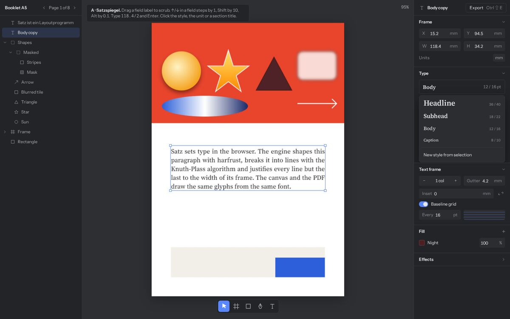
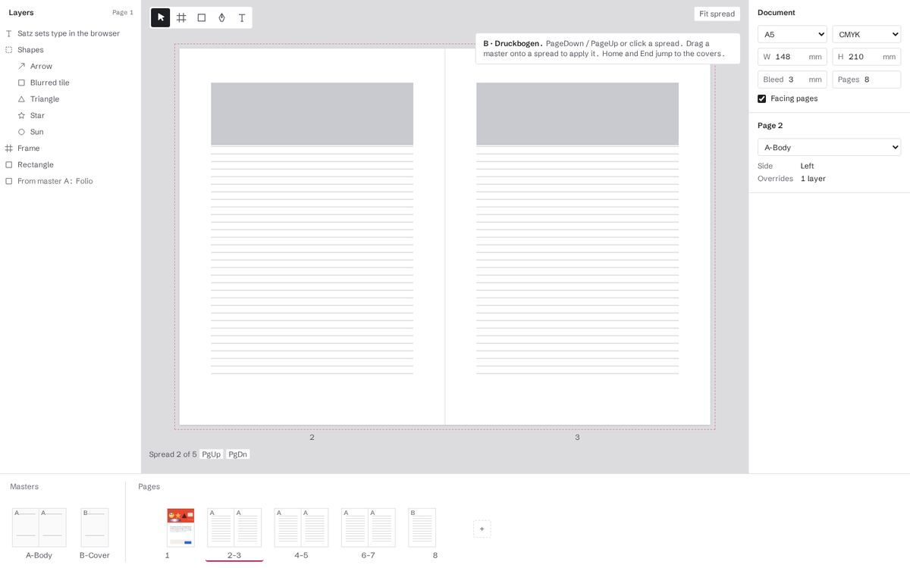
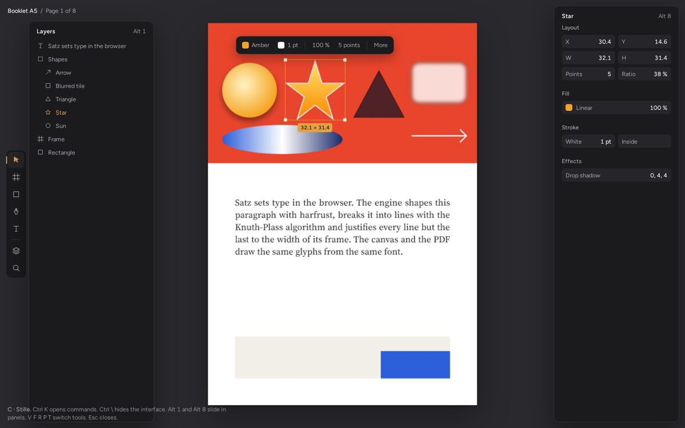
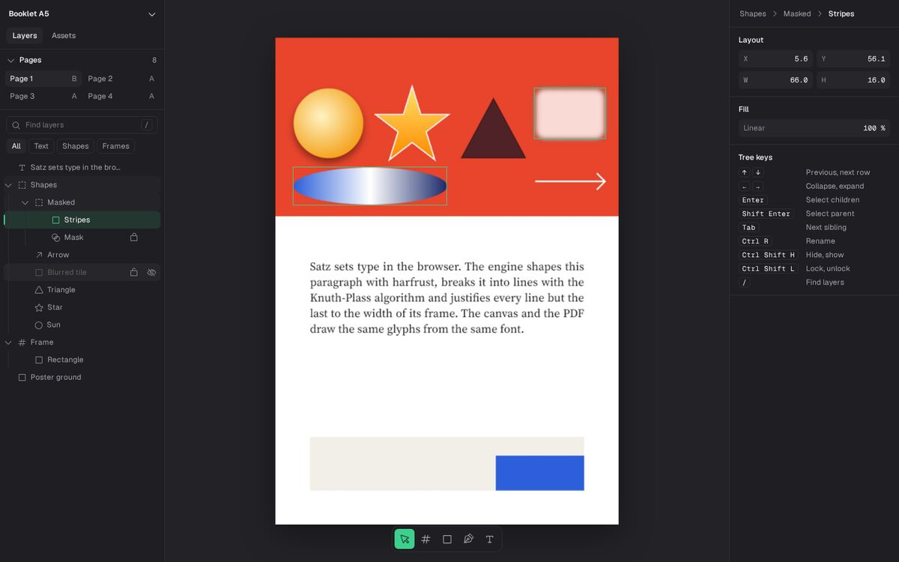
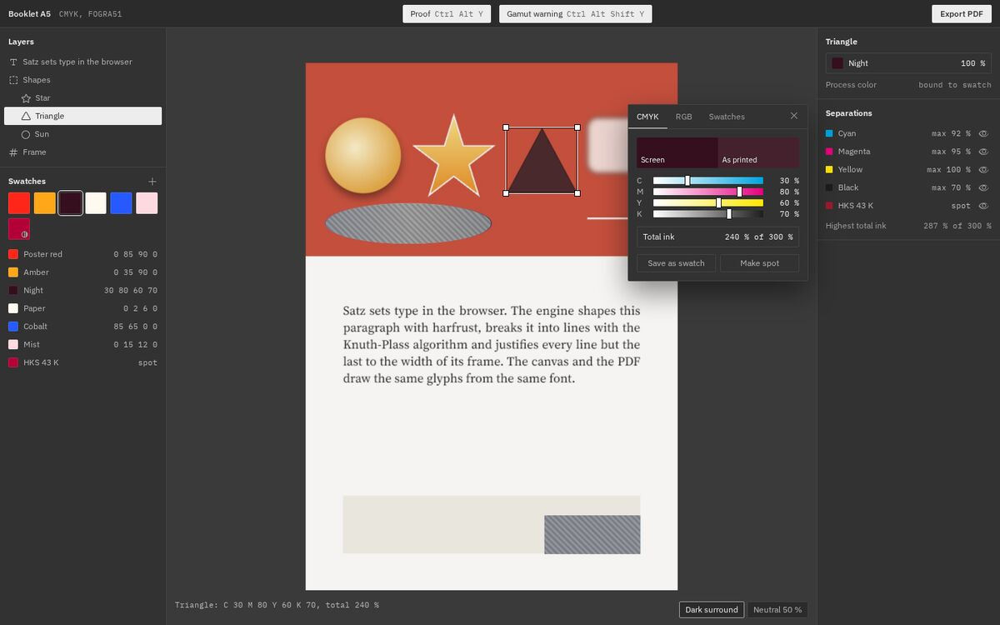
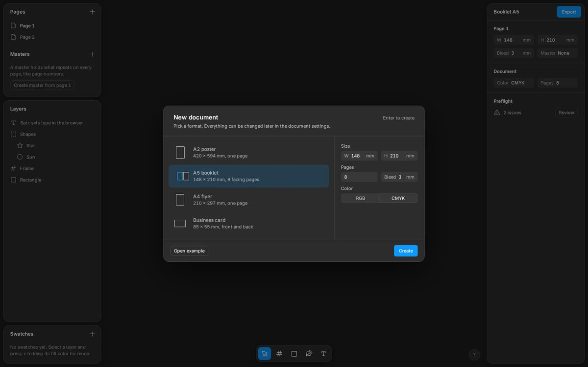
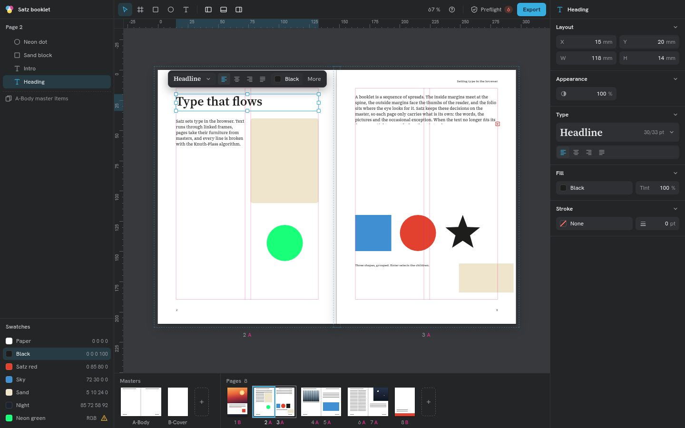
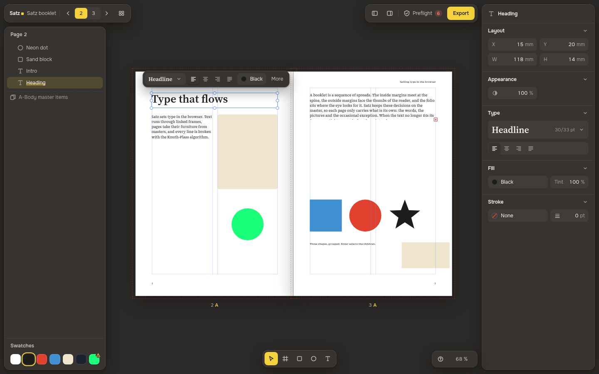
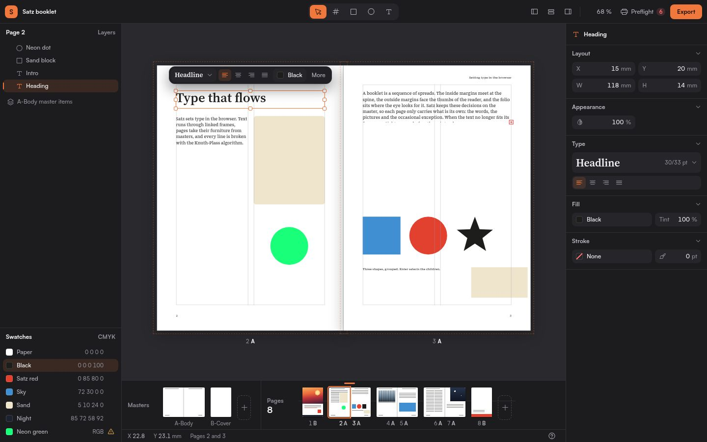
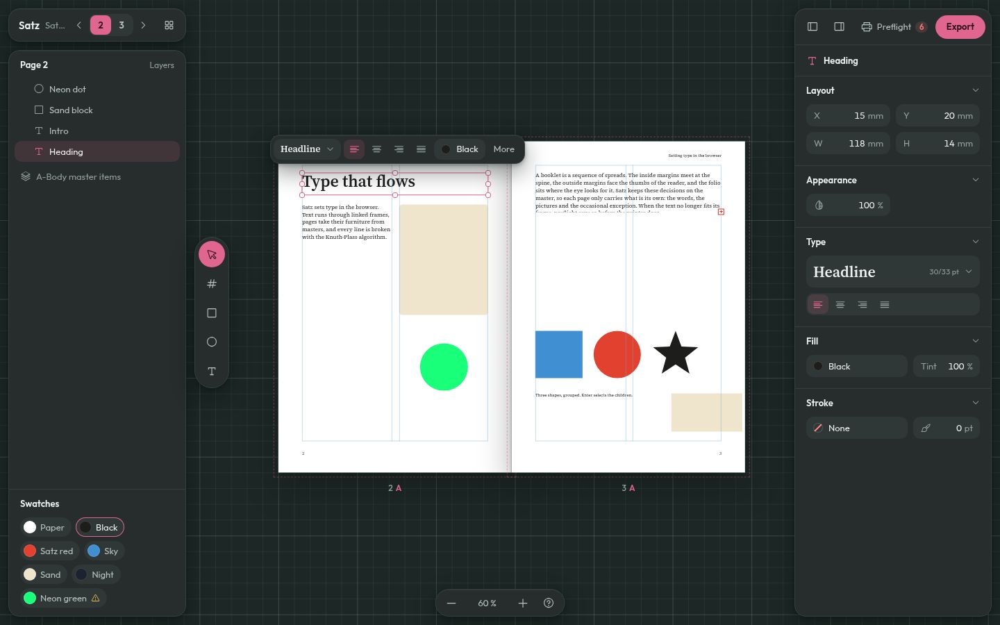

Satz – UI/UX-Review und 6 Designvorschläge
Abschnitte 1–3 Stand 05.10.2026, Commit 5df7a25, Branch main: geprüft gegen web/src/*.tsx, index.css, commands.ts, keys.ts, renderer.ts und die laufende App (Vite-Preview in Chromium, Beispielheft, Feld W, Preflight, Export). Abschnitte 4–8 sind die Designrunde vom 25.09. (Commit 1ad76b4); daraus ist G mit den Festlegungen aus 7 gebaut. Mockups liegen in AGENT/ui-ux/, sind statisches HTML ohne WASM.
1. Corporate Identity als Prüfmaßstab
| Ziel | Woran es messbar ist |
|---|---|
| Professionell | Konsistente Einheiten, Beschriftungen und Abstände; WCAG AA (4,5:1) für Text; keine sichtbaren Brüche (abgeschnittene Werte, leere Panels, Layoutfehler). |
| Minimalistisch | Jedes Element trägt Information; nichts doppelt; Leere hat eine Aufgabe (Leerzustand erklärt, was zu tun ist). |
| Smooth | Zustandswechsel mit 120–260 ms Übergang statt Sprung; Fokus bleibt erhalten; alles per Tastatur erreichbar; prefers-reduced-motion respektiert. |
| Farbe sparsam | 1 Akzent, nur für Auswahl, aktiven Zustand und Fokus. In einem Druckprogramm zusätzlich: Chrome neutral, weil jede Farbe im UI die Beurteilung der Druckfarben verfälscht. |
2. Bestand: Urteil pro Bereich
Schwere: H verletzt die CI deutlich, M spürbar, L Feinschliff, ✓ passt. Die Bilder in ui-ux/current/ zeigen noch die alte Oberfläche vom 25.09.
| Bereich | Ist | Abweichung von der CI | |
|---|---|---|---|
| Kontrast | --text-3 = Vordergrund 50 % in den Hintergrund gemischt, 50 Verwendungen (Feldlabels, Einheiten, Hinweise). | Dunkel 4,0:1 auf Panel, 3,75:1 auf Eingabefeldern, 3,5:1 auf hervorgehobenen Zeilen; hell 3,0:1. Im hellen Thema Akzent 2,9:1, Fehler 3,4:1, Warnung 3,2:1. Bei 11–12 px braucht es 4,5:1. | M |
| Zahlenfelder | Label ziehen, ↑/↓ mit Shift/Alt, Rechenausdrücke, +/− bei Ganzzahlen. | Keine Obergrenze: W = 99999999999 mm wird angenommen, die Ellipse verschwindet, und der Preflight meldet „No issues. The document is ready for print.“ Der Nutzer bekommt weder beim Tippen noch im Preflight einen Hinweis. | M |
| Speichern | Autosave in IndexedDB, Wiederherstellen beim Start. | Scheitert ein Autosave (Speicher voll), erfährt der Nutzer es nicht; erst der Reload zeigt einen älteren Stand. Aus dem Code, nicht im Browser nachgestellt. | M |
| Kürzel in Firefox | Ctrl Shift K Bild platzieren, Ctrl Shift E Export, Ctrl Shift S Speichern unter. | Firefox belegt Ctrl Shift K (Konsole), Ctrl Shift E (Netzwerk) und Ctrl Shift S (Screenshot). Nicht in Firefox getestet. | L |
| Shift H | Bei Text Auto-Höhe, sonst horizontal spiegeln. | Die Kürzel-Übersicht führt Shift H zweimal; Text lässt sich per Tastatur nicht spiegeln, und bei gemischter Auswahl (Text und Form) wird alles gespiegelt. | L |
| Export mehrerer Seiten | PNG/JPEG pro Seite. | Ein 8-seitiges Heft löst 8 Downloads aus; der Browser fragt je nach Einstellung 8-mal oder blockiert ab dem zweiten. | L |
| Leerzustände | Variablen und gemischte Füllungen erklären sich. | Swatches zeigt leer nur Überschrift und „+“. | L |
| Canvas | Canvas #19191c, Chrome #1e1e21; Anschnitt gestrichelt im Akzent 45 %, Beschnitt grau, Schnittmarken. | Anschnitt liest sich nicht mehr als Fehler. Canvas ist dunkler statt heller als das Chrome; Seite ohne Schatten und ohne Seitennummer darunter. Die Zoomstufe ist nur für Screenreader sichtbar. | L |
| Schrift | Hanken Grotesk als woff2 geladen (latin und latin-ext), meist 11 px (13 Regeln) und 12 px (6). | Unabhängig vom Rechner. | ✓ |
| Farben | Akzent #38aee0 dunkel, #0b87bd hell; helles und dunkles Thema. | Akzent nur als Fokus- und Auswahlkontur, Drop-Linie, Anschnitt; keine weiße Schrift auf Blau mehr. Sparsam. | ✓ |
| Bewegung | 6 Übergänge und 5 kurze Animationen (Popover, Toast, Druck, Fehler) in index.css, weicher Zoom 180 ms, prefers-reduced-motion schaltet sie ab. | Nichts blockiert die Eingabe; der Zoom endet bei jeder Eingabe sofort. | ✓ |
| Layout | Feste Panels links und rechts, Leiste oben, Startdialog mittig; Alt 1/Alt 2, Shift W blendet aus; Übersicht mit .. | Wie in 7 festgelegt. | ✓ |
| Canvas-Verhalten | Einrasten, Abstände (Smart Guides), Lineale, Hilfslinien, Layout-Raster, Zoom auf Auswahl, Proof und Gamut im Preflight. | Die größte Lücke vom 25.09. ist geschlossen. | ✓ |
| Tastatur | Befehlspalette Ctrl K, Kürzel-Übersicht ?, PgUp/PgDn/Home/End, Tab zwischen Geschwistern, Ausrichten mit Alt A/H/D/W/V/S, Ausblenden und Sperren. | Vollständig für die Hauptwege. | ✓ |
Gesamt: Professionell bis auf Kontrast und fehlende Grenzen in den Feldern, minimalistisch ja, smooth ja, Farbe sparsam ja.
3. Offene Vorschläge für Canvas und Tastatur
Umgesetzt und entfernt: Anschnitt im Akzent, Einrasten und Abstände, Lineale und Hilfslinien, weicher Zoom, Zoom auf Auswahl, Bogenwechsel, Geschwister-Navigation, Ausblenden/Sperren, Ausrichten, Befehlspalette, UI ausblenden, Kürzel-Übersicht, Zahlenfelder, Proof und Gamut.
| Vorschlag | Warum |
|---|---|
--text-3 auf ≈62 % (dunkel) und ≈68 % (hell), helle Akzent-, Fehler- und Warnfarbe abdunkeln | WCAG AA für Labels und Meldungen. |
| Obergrenzen in den Feldern und im Preflight | Unsinnige Werte fallen beim Tippen auf statt später beim Export. |
Canvas heller als Chrome, z. B. #2a2a2e, optional neutrales 50-%-Grau | Arbeitsfläche trennt sich vom UI; farbkritische Beurteilung in neutraler Umgebung. |
| Leichter Seitenschatten, Seitennummer und Master-Buchstabe unter der Seite | Seite liest sich als Papier; Orientierung im Heft ohne Panel. |
| Vorschaumodus W | Blendet Anschnitt, Rahmenkanten und Hilfslinien aus, schneidet auf Beschnitt (InDesign-Standard). |
| Sichtbare Zoom-Anzeige als Menü | Einpassen, 100 %, Auswahl, direkte Eingabe. |
| Kürzel ohne Browser-Konflikt für Firefox | z. B. Ctrl Alt-Varianten zusätzlich. |
| Mehrseitiger PNG/JPEG-Export als ZIP | 1 Download statt N; der Paket-Export baut schon ZIPs. |
4. Sechs Designs
Jedes Design hat einen anderen Fokusbereich und ein anderes Ziel; Schrift, Akzent, Radius und Dichte unterscheiden sich bewusst. Alle teilen: 1 Akzent, neutrale Grautöne, Übergänge 120–260 ms, prefers-reduced-motion, AA-Kontrast. A–C mit frontend-design (eigene Plan-/Review-Runde gegen die „AI-Default“-Liste, eigene Icons der App), D–F mit design-taste-frontend (Design Read, 3 Dials, Phosphor-Icons, Shape-Lock, keine Gedankenstriche). Hinweis: Der Taste-Skill ist für Landingpages gebaut; Regeln zu Hero, Bildern und Logo-Walls greifen hier nicht und wurden ausgelassen.

A · Satzspiegel frontend-designFokus: Inspector
Ziel: Präzision beim Setzen. Satz ist ein Satzprogramm; der Inspector soll sich wie ein Typometer anfühlen.
- Angedockte Panels mit Haarlinien statt Karten: maximal Canvas, keine Schatten, ruhigste Kante.
- Instrument Sans 12 px, Tabellenziffern: schmal, technisch, bessere Lesbarkeit als 11 px.
- Kobalt
#5a86ffnur für Auswahl, Fokus, Schalter: ruhiger als Figma-Blau, weiß-auf-Kobalt nur als Werkzeug-Icon. - Textstil als Specimen: Stilname in der echten Schrift und relativen Größe; Stil erkennt man, statt ihn zu lesen.
- Felder: Label ziehen, Pfeiltasten, Rechnen, Einheit per Klick mm/pt/px. Laufweite in 1/1000 em (InDesign-Standard statt %).
- Einklappbare Abschnitte mit Höhenanimation, Einzug/Abstände gekoppelt mit Entkoppeln-Knopf, Grundlinienraster sichtbar als Muster.
- Export als Rahmen-Button mit Kürzel: selten gebraucht, darf nicht die lauteste Fläche sein.
Bewertung: CI sehr gut getroffen, nah am Figma-UI3-Bestand. Größter Gewinn pro Aufwand.

B · Druckbogen frontend-designFokus: Seiten, Master
Ziel: das 8-seitige Heft als Ganzes sehen. Helles Thema wie Papier.
- Bogenleiste unten statt Seitenliste: Miniaturen in Druckbögen, Master links davon; Master auf Bogen ziehen weist ihn zu.
- Hell, kühl-neutral (
#f3f3f4, Arbeitsfläche#dcdcdf): Druckvorstufe denkt in Papier; kein Creme-Ton. - Magenta
#c2185bals einziger Akzent: Druckfarbe als Herkunft; nur Unterstrich des aktuellen Bogens, Fokus, Anschnitt. - Schibsted Grotesk: Zeitungs-Grotesk, passt zum Druckthema.
- Aktives Werkzeug schwarz statt Akzent: Farbe bleibt für Dokumentbezug.
- Verhalten: PgUp/PgDn/Home/End, Überblendung beim Bogenwechsel, Seitenzahlen unter den Seiten.
Bewertung: stark für Hefte, für das A2-Plakat verschenkt die Leiste 150 px. Weicht vom festgelegten dunklen Look ab.

C · Stille frontend-designFokus: Canvas, Befehle
Ziel: Konzentration. Standardmäßig nur Seite, Werkzeugschiene und eine Kontextleiste über der Auswahl.
- Kontextleiste an der Auswahl: die 4 häufigsten Eigenschaften dort, wo man hinschaut; „More“ öffnet den vollen Inspector.
- Panels als Schubladen (Alt 1, Alt 8), gleiten 260 ms über den Canvas statt ihn zu verkleinern.
- Befehlspalette Ctrl K: Suche über Befehle, Ebenen, Seiten mit Kürzeln daneben; lehrt Kürzel nebenbei.
- Ctrl \ blendet alles aus (Schiene gleitet weg).
- Bernstein
#e6a23cnur für Auswahl und aktives Werkzeug (Strich statt Fläche); Figtree für einen weichen Ton. - Maßetikett unter der Auswahl.
Bewertung: am „smoothesten“, aber viele Wege sind versteckt; für Erstnutzer schwerer. Weicht vom Figma-UI3-Layout ab.

D · Präzision tasteFokus: Ebenen, Navigation
Design Read: Werkzeug-UI für Profis, Linear-artig nüchtern, Zinc und Geist. Dials: Variance 2, Motion 3, Density 7.
- Ebenenbaum mit Führungslinien, Eltern der Auswahl leicht hinterlegt, Auswahl mit 2-px-Kante statt Vollfläche.
- Suche / und Filter (Text, Formen, Rahmen) mit Leerzustand.
- Hover zeigt Sperren/Sichtbar, gesetzte Zustände bleiben sichtbar; ausgeblendete Ebenen gedimmt.
- Hover auf Zeile hebt das Objekt auf dem Canvas hervor.
- Tastatur im Baum: Pfeile, Enter, Shift Enter, Tab, Ctrl R, Ctrl Shift H/L.
- Breadcrumb im Inspector „Shapes › Masked › Stripes“, klickbar.
- Smaragd
#3ecf8e, Geist Mono für alle Zahlen (Density 7), Radius 6 px überall.
Bewertung: löst die Orientierung in tiefen Dokumenten; passt zum Figma-Layout. Grün als Auswahlfarbe ist ungewohnt.

E · Proof tasteFokus: Farbe, Ausgabe
Design Read: farbkritisches Druckwerkzeug, IBM-Plex-Präzision, monochrom. Dials: Variance 2, Motion 2, Density 6.
- Kein Akzent: nur reine Grautöne (Chroma 0). Aktiv = invertiert (Weiß auf Grau). Die einzigen Farben sind Dokument und Druckfarben.
- Auswahl als Doppelkontur weiß/schwarz: sichtbar auf jeder Farbe, auch auf Blau.
- Proof und Gamut-Warnung in der Kopfzeile; außerhalb FOGRA51 schraffiert.
- Umgebung umschaltbar dunkel oder neutral 50 %.
- CMYK-Regler mit Farbverlauf der Druckfarbe, „Bildschirm | Druck“ nebeneinander, Gesamtfarbauftrag gegen 300 % (invertiert bei Überschreitung).
- Separationen mit Maximalwerten und Sonderfarbe; Swatches als Raster plus Liste mit CMYK-Werten.
- Radius 2 px, IBM Plex Sans/Mono.
Bewertung: fachlich das stärkste Argument („Farbe sparsam“ wird zur Funktion). Farbvorschau im Mockup ist naiv berechnet; echt übernimmt das moxcms.

F · Erster Eindruck tasteFokus: Erststart, Export
Design Read: Redesign mit Erhalt, für Erstnutzer und Recruiter. Figma-UI3-Tokens bleiben, Inter wird geladen. Dials: Variance 3, Motion 4, Density 5.
- „New document“ beim Start: Formate mit proportionalen Seitensymbolen (A2-Plakat, A5-Heft 8 Seiten, …), Enter erstellt, „Open example“ daneben.
- Leerzustände für Master und Swatches erklären den Zweck und bieten die nächste Aktion.
- Export als Popover mit Voreinstellung und Preflight-Liste; „Export anyway“, Fortschritt, Toast mit Dateiname.
- Kürzel-Übersicht ? in 3 Gruppen.
- Duplikate entfernt: Kopf zeigt Dokumentname statt „Page“, Masters/Pages ohne Chevron-Mix.
- Kontrast angehoben:
--text-360 % statt 45 %.
Bewertung: geringstes Risiko, passt exakt zum festgelegten Design. Allein nicht genug für „smooth“ und „Farbe sparsam“.
5. Empfehlung
F als Basis, dazu A-Felder, D-Baum und E-Farbe. F behält Figma UI3 und dark (festgelegt) und behebt Schrift, Kontrast, Leerzustände, Export. Aus A kommen Zahlenfelder, einklappbare Abschnitte und Textstil-Specimen, aus D Baum-Tastatur, Hover-Hervorhebung und Breadcrumb, aus E neutrale Grautöne, Doppelkontur-Auswahl als Option und Proof/Gamut. Akzent bleibt Figma-Blau, aber nur als Kante/Tönung, nie als weiße Schrift auf Blau. B (hell) und C (versteckte Panels) nicht als Ganzes übernehmen: sie widersprechen dem festgelegten Layout; die Bogenleiste aus B lohnt sich später als einblendbare Ansicht für Hefte, die Befehlspalette aus C als Zusatz.
Reihenfolge nach Wirkung: 1. Inter laden, Kontrast AA, Akzent reduzieren. 2. Übergänge 120–260 ms. 3. Zahlenfelder. 4. Einrasten und Abstände auf dem Canvas. 5. Leerzustände und Export-Popover. 6. Baum-Tastatur, Shift 2, PgUp/PgDn. 7. Proof.
6. Getestet
05.10.: Vite-Preview in Chromium, Start, Beispielheft, Ellipse mit W = 99999999999 mm, Preflight, Export; Kontraste aus den CSS-Variablen berechnet. Nicht getestet: Firefox, Safari, Screenreader, Touch.
25.09.: Bestand: App mit Vite und Playwright (Chromium, SwiftShader) gestartet, Rechteck und Text gezeichnet, Farbwähler, Formenmenü, Variablen, Kontextmenü, schmales Fenster geöffnet. Mockups: jedes in Chromium geöffnet, Kerninteraktion per Skript ausgelöst und per Screenshot geprüft (A Stil-Menü, Einklappen, Rechenausdruck; B PgDn; C Palette, Schubladen; D Hover, Baum; E Proof, Gamut, Umgebung; F Dialog, Export). Nicht getestet: Firefox, Screenreader, echte Tastatur mit Colemak DH, Mockups ohne Internet (Schriften und Phosphor kommen per CDN).
7. Feedback des Nutzers
Pro Entwurf
- A: Schriftauswahl übernehmen.
- B: Übersicht aller Seiten und Master gefällt, Platz dafür noch offen. Formatvorlagen (A4, A5, …) in der Dokumenteinstellung übernehmen, PgUp/PgDn ebenso. Master per Auswahlfeld in den Einstellungen zuweisen, nicht per Ziehen.
- C: Jedes Element einzeln ausblendbar. Befehlspalette Ctrl K gewünscht, Einbau offen. Einstellungsfelder rechts (Radien, Schrift, Schlichtheit) als Vorbild. Schnellbearbeitung über der Auswahl übernehmen, Größenanzeige darunter nicht.
- D: Baum-Tastatur übernehmen. Hervorhebung auf dem Canvas ja, aber ohne Animation.
- E: Proof, Gamut-Warnung und Separationen mit Farbauftrag interessant, aber nur bei Bedarf eingeblendet; Platz im Layout offen.
- F: Als Ganzes zu sehr Figma-Klon. Gut: Panel-Abstände, Radien, Schatten, Startbildschirm als erster Entwurf. Preflight noch nicht final.
Allgemein
- Animationen blockieren nie: alles bleibt während einer Animation sofort klickbar. Animationen selbst sind erwünscht.
- Layout mit festen, nicht schwebenden Panels wie in A: schlichter und platzsparender.
- Zahlenfelder wie in A: Ziehen, +/−, usw.
- Smart Guides: beim Verschieben Abstände zu den 2 nächsten Elementen; mit Alt ohne Verschieben Abstand zum Element unter der Maus (wie Figma).
- Einrasten an Elementen, Raster, Seitenkanten usw. Gewichtung später durchdenken und testen.
Festgelegt nach Rückfragen
- 2 Layout-Familien: fest angedockt (wie A) und schwebend (wie heute). Beide bekommen dieselben Funktionen.
- Start: eigener Startbildschirm, Ctrl N. Formate A2–A6, DL, US Letter, Eigene; Hoch/Quer.
- Dokument (nichts ausgewählt, rechts oben): Formatvorlage, B, H, Anschnitt, Seiten, Doppelseiten, Farbmodus.
- Zahlenfelder im Geist von C: Label ziehen, ↑/↓ ±1, Shift ±10, Alt ±0,1, Rechenausdrücke, +/− nur bei Ganzzahlen.
- Textstile als Specimen-Menü wie A.
- Quick-Edit über der Auswahl je nach Objekt, dazu „More“; beim Ziehen ausgeblendet.
- Smart Guides: nächstes Ziel innerhalb 5 px gewinnt (Objekte, Seitenränder, Seitenmitte, Satzspiegel, Raster); Ctrl beim Ziehen schaltet Einrasten aus.
- Master per Auswahlfeld für alle gewählten Seiten, nie per Ziehen.
- Ausblenden nur ganzer Bereiche: Alt 1 links, Alt 2 rechts, Alt 3 Leiste unten, Ctrl \ alles.
- Ctrl K nur als Kürzel: Befehle, Ebenen, Seiten, Swatches, Textstile.
- PgUp/PgDn wechseln den Bogen. Der Canvas zeigt immer einen Bogen.
- Preflight-Modus groß und live, Ctrl Alt Y oder Knopf mit Warnungszähler: Canvas mit Proof und Gamut, rechts breite Spalte mit Prüfliste, Separationen, Farbauftrag, Export. Klick auf Eintrag wählt das Objekt, Esc beendet. Export (Ctrl Shift E) öffnet immer den Preflight.
- Fest: Leiste unten mit Mastern und Bögen, ausblendbar.
- Schwebend: keine Seitenliste. Oben links „‹ [2] [3] ›“: Kästchen wählen die Seite des Bogens (Ebenenbaum zeigt nur sie), Pfeile den Bogen. Übersichts-Modus nur per ., nicht durch Herauszoomen: alle Bögen, Master in eigener, klar getrennter Reihe; springen, mehrfach wählen und Master setzen, Seiten verschieben/hinzufügen/löschen, Master anlegen/bearbeiten.
- Animationen nie blockierend, Canvas-Hervorhebung ohne Animation.
8. Vier Designs nach den Vorlieben
Alle 4 setzen jeden Punkt aus Abschnitt 7 um und teilen denselben Verhaltenskern (ui-ux/src/core.js, von src/build.sh in jede Datei eingebettet, jede Datei steht allein). Gestaltung, Icons und das kreative Extra sind je eigen. Beim Öffnen erscheint der Startbildschirm; Esc öffnet das Beispielheft, ? zeigt alle Kürzel.

G · Register frontend-designfest
Druckfarben als Rollen: Cyan für Auswahl und aktiv, Magenta für Smart Guides und Abstände (wie InDesign). Graphit, Canvas heller als Chrome, Hanken Grotesk. Extra: mm-Lineale, die die Ausdehnung der Auswahl und eingerastete Hilfslinien zeigen.

H · Fahne frontend-designschwebend
Vokabular des Korrektors: Auswahl in Non-Photo-Blau, Guides und Abstände im Rotstift, Textmarker-Gelb für aktive Zustände. Schwebende Karten mit Abstand, Radius und Schatten, Onest. Extra: Übersichts-Modus als Leuchtpult, Master über einer Schnittlinie.

I · Messwerk tastefest
Design Read: Profi-Werkzeug, präzise Instrumentensprache, Satoshi, Phosphor, Zink mit Burnt Orange. Dials: Variance 3, Motion 4, Density 7.
Extra: Seitenleiste als Zeitleiste mit Abspielkopf auf dem aktuellen Bogen, Statuszeile mit Cursor in mm, Skalenstriche laufen beim Ziehen am Label durchs Zahlenfeld.

J · Matte tasteschwebend
Design Read: Profi-Werkzeug, ruhige Werkbank-Sprache, Outfit, Phosphor, gedecktes Rosé. Dials: Variance 4, Motion 5, Density 5.
Extra: Canvas als Schneidematte mit 10/50-mm-Raster, das auf den Dokumentkoordinaten sitzt und mitzoomt; in der Übersicht liegen die Seiten auf der Matte, die Master in einer Ablage.
Getestet (Chromium, 1440 × 900, je Design dasselbe Skript): Start, neues Dokument, Beispiele, Alt 1/2/3, Ctrl \, PgUp/PgDn, Baum-Tastatur, Ausblenden und Undo, Zahlenfelder (118/2, ↑, Shift ↑, Alt ↓, +1cm, Label ziehen), Ziehen mit Einrasten und Abständen, Alt-Abstände, Ctrl K, Preflight mit Separationen, Sprung zum Problem, Export, Master per Auswahlfeld für 2 Seiten, Seite verschieben, Master bearbeiten, Rechteck zeichnen, Zoom. Ergebnisse in allen 4 gleich, keine JS-Fehler. Nicht getestet: Firefox, echte Tastatur mit Colemak DH, Ziehen von Seiten per Maus, Screenreader, ohne Internet (Schriften und Phosphor per CDN).